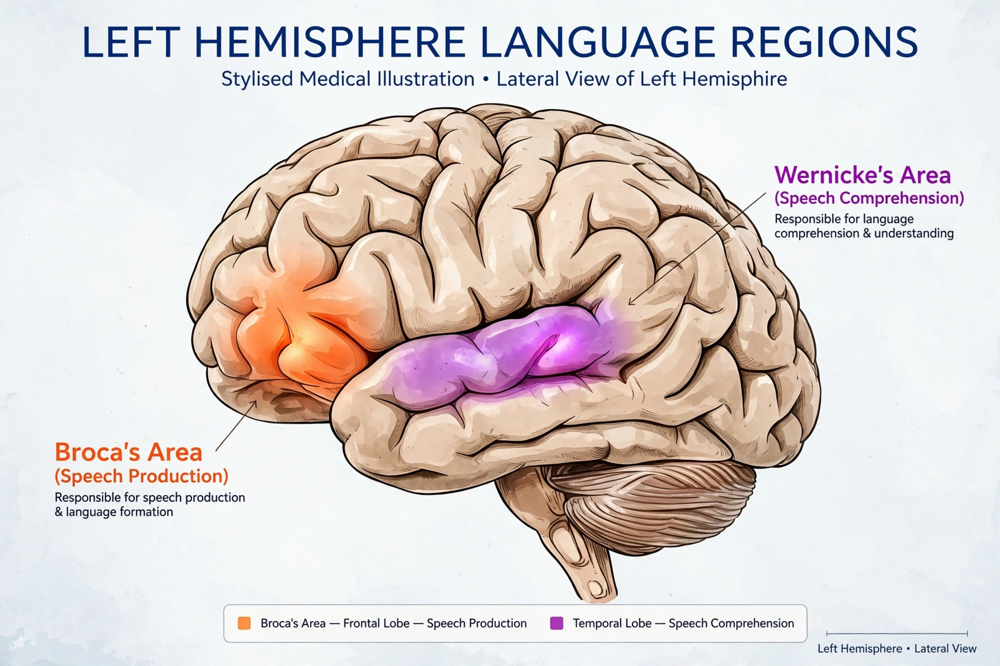

| Psycholinguistics | |
|---|---|
| Key figures | Noam Chomsky, Jean Piaget, Lev Vygotsky, Roger Brown, Willem Levelt, Elizabeth Bates |
| Topics | Language acquisition, comprehension, production, bilingualism, aphasia |
| Methods | Reaction-time experiments, eye-tracking, corpus studies, neuroimaging |
| Related fields | Cognitive psychology, linguistics, neuroscience, philosophy of language |
Psycholinguistics or psychology of language is the study of the interrelation between linguistic factors and psychological aspects — the mental processes and representations involved in acquiring, comprehending, and producing language. The field sits within cognitive science and draws on linguistics, psychology, neuroscience, and computer science. Its central questions include how children learn their first language, how adults understand sentences in real time, how speakers plan utterances, and how language is organised in the brain.
The term entered wide use with the 1951 Social Science Research Council seminar and the influential volume Psycholinguistics: A Survey of Theory and Research Problems (1954), edited by Charles Osgood and Thomas Sebeok. The cognitive revolution of the late 1950s proved decisive: B. F. Skinner's behaviourist account of language in Verbal Behavior (1957) was sharply criticised by Noam Chomsky in a 1959 review that argued language learning cannot be explained by conditioning alone, given the creativity of children's speech and the poverty of the stimulus. Chomsky's proposal of an innate language faculty (later the "language acquisition device") set the field's agenda for decades, alongside developmental work by Jean Piaget, Lev Vygotsky, and Roger Brown.
Children acquire the grammar of their native language rapidly and in a broadly uniform sequence of stages — babbling, one-word, two-word, and increasingly complex speech — despite variable input. Key findings include children's over-regularisation of rules (saying goed or mouses), showing they extract patterns rather than merely imitate; the sensitivity of infants to the phonemic contrasts of their language within the first year; and evidence for a critical or sensitive period, after which native-like attainment becomes difficult, drawn from late first-language learners and second-language studies. Usage-based theorists such as Michael Tomasello counter that general cognitive abilities — intention-reading, pattern-finding, and statistical learning — can explain acquisition without a specialised innate grammar, and connectionist models have modelled aspects of development computationally.
Understanding speech requires segmenting a continuous sound stream into words, recognising words (modelled by frameworks such as the Cohort model and TRACE), and building syntactic and semantic structure incrementally. Psycholinguists study this with reaction-time tasks, priming, and eye-tracking. Famous phenomena include garden-path sentences ("The horse raced past the barn fell"), which reveal that the parser commits early to an analysis and must reanalyse; lexical ambiguity resolution; and prediction — listeners anticipate likely upcoming words, as shown by event-related brain potentials such as the N400 response to semantic anomalies (described by Marta Kutas and Steven Hillyard in 1980).

Speaking involves conceptualising a message, formulating it linguistically (selecting words — lemmas — and building syntax), and articulating it, all in a fraction of a second per word. Willem Levelt's Speaking (1989) provided the standard blueprint. Evidence comes from speech errors ("slips of the tongue"), which reveal the units and stages of planning; from tip-of-the-tongue states, showing that speakers can retrieve a word's meaning and partial sound structure independently; and from picture-naming experiments measuring the time course of retrieval. Bilingual speakers must additionally control which language is active, a topic studied under bilingual language control.
Neurolinguistic evidence began with 19th-century lesion studies: Paul Broca's patients with frontal damage and impaired production, and Carl Wernicke's patients with temporal damage and impaired comprehension, gave their names to the two classical aphasias. Modern neuroimaging (fMRI, EEG/MEG) has refined the picture into distributed networks, usually left-lateralised, with substantial individual variation and plasticity, especially in children. Developmental disorders such as developmental language disorder and dyslexia, and the effects of stroke and dementia on language, are major applied concerns, linking psycholinguistics to speech-language pathology and education.